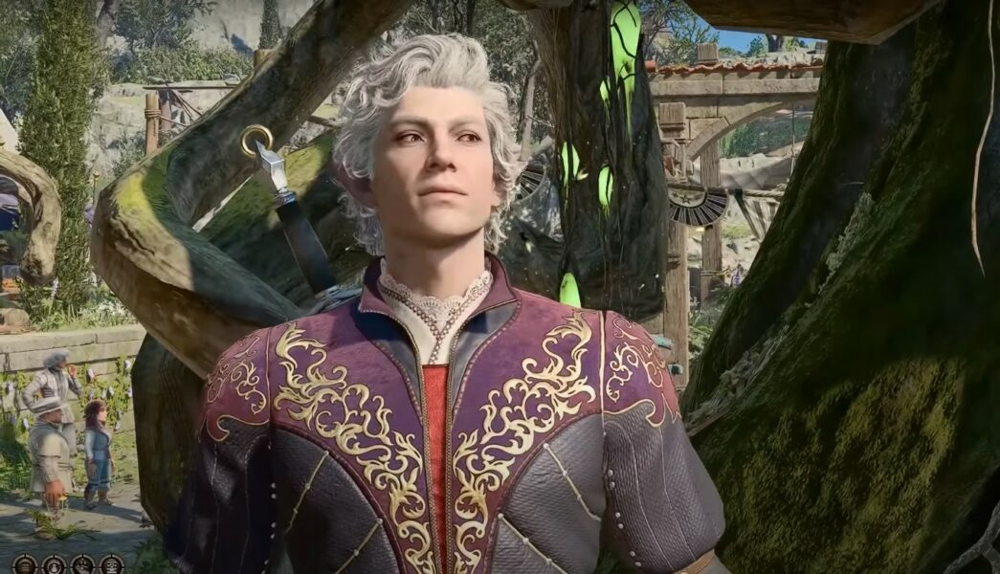
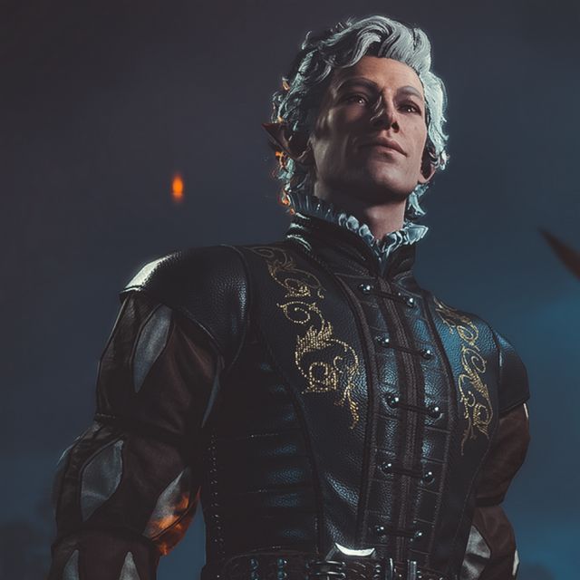
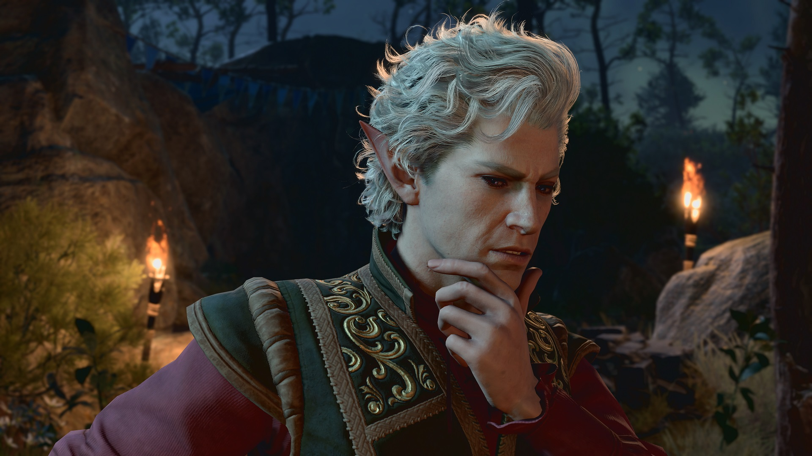

Astarion
- Race: Elf
- Class: Rogue
About
Source: Baldur's Gate III Homepage
Astarion prowled the night as a vampire spawn for centuries, forced to follow the orders of his sadistic master, Cazador: seduce every fool with a pulse, and lure them back to Cazador's lair. Free for now, Astarion will do anything to keep his life in the light.
He can see but one way to ensure his liberty for good: become many times more powerful than his old abuser could ever dream of being.
Gallery


